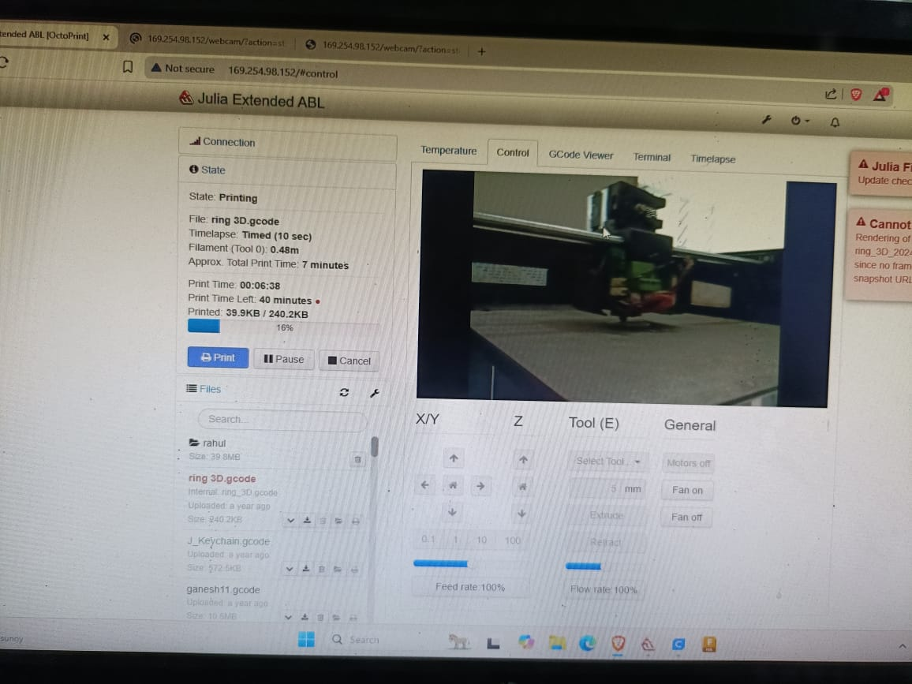

3D Printing & Designing
In this 7-day module, I explored the complete journey of 3D printing — from theory and materials to slicing, troubleshooting, and post-processing. My highlight was printing a Star Wars spaceship as a final showcase.
Day 1 – Basics of 3D Printing
Learned the fundamentals of additive manufacturing and studied the key printer parts like frame, bed, nozzle, and extruder. Watching a live demo helped me visualize how a digital design is gradually transformed into a tangible model.
Day 2 – Materials & Safety
Understood PLA, ABS, PETG, and TPU filaments, their strengths, and ideal use cases. Practiced safety measures such as handling hot nozzles carefully and ensuring ventilation. Learned about bed adhesion using tape, glue, and heated surfaces.
Day 3 – CAD & STL Files
Explored TinkerCAD for beginner-friendly designs and Fusion 360 for advanced modeling. Learned about the STL file format, which stores 3D models as triangular meshes, making it universally compatible with slicers.
Day 4 – Slicing Software
Installed Cura slicer and experimented with layer height, infill %, supports, and print speed. Previewed toolpaths in the slicer, which made me confident about how the printer would execute the design.
Day 5 – First Print & Calibration
Practiced bed leveling and nozzle calibration using a calibration cube and Benchy boat. Identified issues like stringing and slight layer shifting, which I documented for troubleshooting.
Day 6 – Troubleshooting & Print Quality
Fixed stringing by lowering print temperature and enabling retraction. Improved bed adhesion by adjusting leveling and temperature. Experimented with belt tightening to prevent layer shifting. Explored different infill patterns and speeds.
Day 7 – Post-processing & Advanced Learning
Smoothed prints with sanding and learned about acetone vapor treatment for ABS. Painted models with acrylics for a polished finish. Explored advanced filaments like wood-fill and carbon-fiber PLA, and understood the basics of resin (SLA/DLP) printing.
🚀 Star Wars Spaceship Project
For my final practice, I printed a Star Wars spaceship. This project tested everything I had learned: STL preparation, slicer parameters, calibration, and post-processing.

✅ Learning Outcomes
- Independently use slicing software for any STL model.
- Operate FDM printers confidently, including calibration and troubleshooting.
- Connect digital CAD models with physical printed prototypes.
- Apply post-processing techniques for professional finishes.